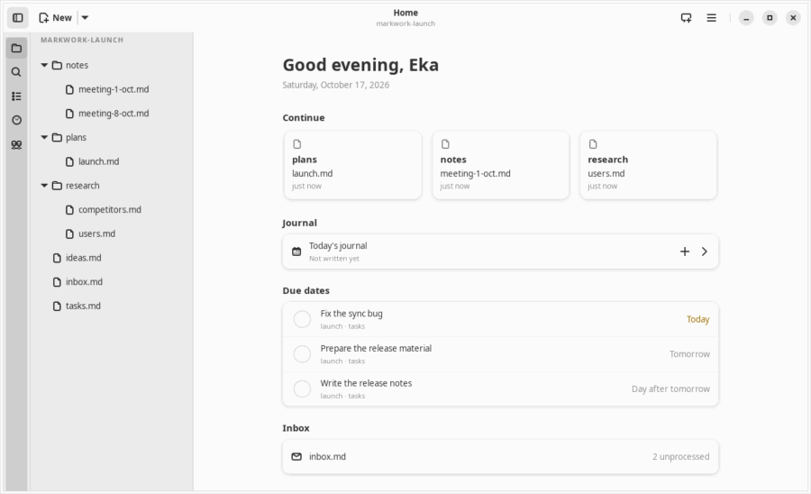

Workspace
Home
The Home tab summarizes what you can continue today: recent files, today's journal, running agents, due dates from kanban boards, and the unprocessed inbox. Everything is read directly from the Markdown files in the work folder, without a database.
Opening Home
- Home opens by itself when Markwork starts without saved tabs, and when the last tab is closed.
- Alt+Home or the ☰ menu → Home opens it at any time. There is only one Home tab, marked with a house icon.
- The Home tab is recorded and restored together with the file tabs.
- Do not want Home to appear by itself? Turn off Home in Preferences (Ctrl+,). After that, closing the last tab empties the document as before.

What Home contains
- Set up: shown at the top only while a program a feature needs is missing (see Programs below), with How to install for each. Hide keeps it away until the list of missing programs changes; once everything is installed it is not there at all.
- Continue: up to three cards of the latest files, one card per folder, so that every card represents a different place of work.
- Journal: the Today's journal row with the number of notes and activities of today. Click it to open the journal, or the + button for a quick capture. It is shown when a work folder is open.
- Agent:
[agent:: pi]cards that are working, queued, or waiting for your answer. Click a waiting row to answer right away; a working one opens its log; a queued one opens its board. This section is only shown when an agent is running. - Due dates: cards from all the kanban boards in the work folder that are not finished and whose due date (
[due:: YYYY-MM-DD}) is overdue, today, tomorrow, or the day after. The status is written as text (2 days overdue, Today, Tomorrow), not only a color. Cards in the Done column or already checked are not included. The project name is taken from the#project/…tag or theproject:frontmatter of the board. - Inbox: an inbox file that still has unchecked items, with their number.
- Recent files: other files that were opened recently, with their folder and age.
Finishing tasks
Check the box in front of a task to mark it done: Markwork writes [x] to the card on its board. If that board is open, the change goes through its editor as one undo step. The task stays visible until Home is redrawn, so a mistaken check can be undone right away. If the card has changed since Home was read, the check is rejected and the board is not touched. Click the task title to open its board.
Programs
Markwork edits plain files on its own, but some features use programs it does not include. The Programs page (at the foot of the sidebar, or the ☰ menu → Programs) says for each whether it is installed, which version, and where it was found, and how to install it when it is not: a command for Linux, macOS, or Windows (the tab of your system opens first) with a copy button, Open Terminal, and a link to the full instructions. Check again looks once more; coming back to the window does too while something needed is missing. A dot on Programs in the sidebar shows while a needed program is missing.
- git, for the History tab, pull requests, the agent's history tools, and a worktree per card. Always needed.
- pi, for cards worked on by an agent (the pi orchestrator).
- markworkd, optional: needed only when Preferences → Agents runs the agents through markworkd, on this computer or on an SSH machine. Then Home offers Run in this window instead when it is missing.
Programs are looked for the way Markwork starts them: in PATH, then in ~/.local/bin and the other per-user folders. When agents run on an SSH machine, pi and git are checked on that machine through its markworkd, in one of the project folders you chose there, so the check sees the same PATH and programs list the agent will; a program the daemon's programs list leaves out shows as Not allowed by markworkd. Without a project folder there, or while the machine does not answer, they show as Unknown rather than missing.
Where the data comes from
- Due dates and the inbox are read from the Markdown files in the open work folder (using a cache by modification time, at most 300 files). An unsaved tab is read from its editor.
- The list of recent files is stored in the settings (
recent-files, 30 files). - Home is recalculated every time it is shown, when the window becomes active again (for example after
git pullor an edit from another editor), and when the status of an agent changes.